Dit is een werkversie die op elk moment kan worden gewijzigd, verwijderd of vervangen door andere documenten. Het is geen stabiel document.
1. Introductie
Building Information Modelling (BIM) en Geografisch informatiesystemen (GIS) worden algemeen erkend als aanvullende bronnen van informatie. Waar BIM modellen worden gebruikt om een enkel gebouw, bouwwerk of kunstwerk in hoog detail te representeren worden GIS modellen gebruikt om grotere regio's te representeren met minder detail. Het integreren van deze twee databronnen kan zeer nuttig zijn voor zowel de BIM als GIS wereld.
Ondanks het feit dat BIM en GIS gedeeltelijk dezelfde bouwwerken modelleren op verschillende schaal en detail niveau is de integratie tussen beide lastig. Beide velden hebben een andere modelleer benadering die overbrugt moet worden om succesvol BIM-modellen naar GIS te brengen.
Figuur 1Een wireframe representatie van een BIM model (links) en een exterieur GIS model (rechts).
Het essentiële verschil tussen BIM en GIS is dat in BIM alle objecten los van elkaar en als volumes gemodelleerd zijn. Iedere wand, deur en vloer zijn losse gesloten objecten. In GIS wordt een gebouw gerepresenteerd als een enkel gesloten object. Er is geen scheiding tussen verschillende objecten die samen het gebouw vormen. Er zijn verschillende manieren om dit verschil te overbruggen. Er zijn bijvoorbeeld softwarepakketten die het mogelijk maken om BIM modellen en GIS modellen in dezelfde omgeving te openen. Dit is vrij makkelijk voor de gebruiker en stelt weinig eisen aan de BIM modellen. De keerzijde is dat dit de mogelijkheden beperkt om de BIM modellen in de GIS omgeving te gebruiken en het bindt de gebruiker vaak aan een enkele software omgeving/leverancier. Er zijn software pakketten die het mogelijk maken om BIM modellen (gedeeltelijk) 1:1 te vertalen naar een GIS data formaat. Ook dit stelt relatief weinig eisen aan de BIM modellen maar resulteert in modellen die vooral voor visualisatie bruikbaar zijn. Als laatste zijn er software oplossing die BIM modellen omzetten naar GIS conforme bestanden. Deze oplossingen resulteren in goed bruikbare GIS modellen, maar stellen relatief strenge eisen aan de BIM modellen die gebruikt kunnen worden als input.
De laatste oplossing is interessant voor het integreren van BIM in een GIS omgeving. Helaas zijn de eisen waaraan de BIM modellen moeten voldoen om tot een goed resultaat te leiden vaak onduidelijk en slecht gedocumenteerd. Aanvullend moeten er extra stappen genomen worden om aan deze eisen te voldoen omdat niet alle BIM modelleersoftware modellen op een correcte manier opslaat. Vaak is een expert nodig om de BIM modellen aan te passen voordat ze voldoen aan alle eisen om tot een goed conversie resultaat te komen. Echter is deze complexe omzetting niet altijd nodig voor het uiteindelijke doel van het model. Als enkel simpele analyses of visuele representaties nodig zijn kunnen andere omzettingen zoals een 1:1 vertaling ook uitkomsten bieden. De uitdaging hier is het ontwikkelen van breed gedragen, gestandaardiseerde oplossingen met duidelijke handreikingen zodat deze BIM-naar-Geo oplossingen ook beschikbaar komen voor klein-tot-middelgrote projecten waar niet altijd de benodigde expertise beschikbaar is.
1.1 Leeswijzer
1.2 Toepassingsgebied
2. Achtergrondinformatie
2.1 Soorten informatie
Zowel BIM- als Geo-modellen maken deel uit van een breder informatielandschap. In de ISO 19650-1 wordt informatie in drie soorten onderverdeeld:
Geometrisch: 2D- of 3D-modellen, met bijvoorbeeld vormen en hun dimensies
Alfanumeriek: Gestructureerde data die niet over geometrieën gaat, zoals de kenmerken van objecten.
Documentatie: Ongestructureerde data zoals PDF-bestanden en foto's.
Deze soorten informatie worden ieder op een andere manier verwerkt, zowel door mensen als software. Het maken van dit onderscheid helpt daarmee ook om de juiste keuzes te maken bij het converteren en beheren van informatie. De nadruk van deze praktijkrichtlijn ligt op geometrische informatie, maar de overige soorten zullen ook behandeld worden.
2.1.1 Documentatie
Omdat documentatie ongestructureerde data bevat, kan deze niet uitgedrukt worden in BIM- of GIS-standaarden. Hierdoor is dit soort informatie ook niet geschikt voor conversie. Er kan wel een link bestaan tussen (geometrische) objecten en documenten (bijvoorbeeld IfcRelAssociatesDocument in IFC of externalReference in CityGML). Het kan nodig zijn om documenten die gekoppeld zijn aan een BIM model ook te behouden in een Geo-context.
2.1.2 Alfanumeriek
Alfanumerieke informatie kan op allerlei plaatsen en vormen worden bijgehouden. De scheiding tussen alfanumerieke en overige informatie wordt daarom vaak ook niet zo scherp gemaakt in de praktijk. Zo kan het materiaal of bouwjaar van een object als attribuut in een BIM- of GIS-model opgenomen zijn, in een PDF of spreadsheet staan, of als gestructureerde data in een apart systeem beheerd worden. Ook kunnen objecten geclassificeerd worden naar diverse classificatie-systemen, zoals NL-SfB, NLCS of IMBOR.
Bij de stap van BIM naar Geo is het technisch goed mogelijk om alle kenmerken over te nemen, zolang objecten ook 1 op 1 overgenomen worden. De vraag is alleen welke informatie daadwerkelijk relevant is. In een IFC-model kunnen bijvoorbeeld gedetailleerde kenmerken zitten over materiaaleigenschappen of fabrikantdata. Voor het meeste GIS-gebruik is deze informatie niet relevant en zal deze voornamelijk extra ruis opleveren. In deze praktijkrichtlijn zullen een aantal best practices benoemd worden om hiermee om te gaan.
2.2 BIM & GEO modellen
BIM en GIS modellen spelen ieder een unieke rol die onlosmakelijke met elkaar verbonden zijn. BIM modellen representeren een gebouw op een architectonische schaal terwijl GIS modellen hetzelfde gebouw kunnen representeren op een stedelijke schaal. De gebouwen gemodelleerd in BIM modellen hebben een hoog detail niveau. Objecten zoals kozijnen, deurklinken en scharnieren zijn in een gedetailleerde en precieze manier gemodelleerd. GIS objecten die dezelfde gebouwen representeren zijn veel simpeler. Kleine details die aanwezig zijn in BIM modellen worden over het algemeen niet, of niet expliciet, gemodelleerd in GIS.
Er zijn een aantal redenen voor deze verschillen:
Een GIS model bevat informatie over grote clusters van gebouwen, mogelijk zelfs van complete steden. De informatie opslaan op een BIM schaal voor deze gebieden zal zeer zware modellen opleveren die lastig, zo niet onmogelijk, zijn om mee te werken.
GIS data/formats zijn ontwikkeld om te werken met andere bronnen dan BIM data. Waar in BIM vaak met de hand wordt gemodelleerd (al dan niet aangevuld door programmeren/ai) worden de meeste GIS modellen gebaseerd op in-situ metingen. Voor gebouwen zijn deze meeting vaak LiDAR scans. Deze scans kunnen ruis in de data, en occlusion (gaten in de metingen) bevatten en hebben een beperkte resolutie. Met deze data is het niet mogelijk om snel op grote schaal zeer gedetailleerd modellen te creëren.
GIS modellen spelen, vaker, een publieke rol dan BIM data. GIS data is beschikbaar voor gebruikers om te downloaden en te verwerken. Als GIS data alle informatie over de opgeslagen gebouwen zou bevatten, zoals in BIM modellen, zou dit mogelijk tot data veiligheid problemen zorgen. Aanvullend zal er dan ook zoveel data beschikbaar zijn waardoor de gebruiker door het bomen het bos niet meer zou kunnen zien. Bovendien zit in BIM modellen data waarvoor het niet in het belang van de ontwerper is om deze data te delen. Op deze data kan ook auteursrechten op rusten.
Om enerzijds in een GIS-omgeving te kunnen worden toegepast en anderzijds in een BIM-omgeving zijn GIS-data en BIM-data op een verschillende manier opgebouwd. Geometrisch gezien is een gebouw in een BIM model geconstrueerd uit verschillende losse objecten. Wanden, vloeren en deuren zijn allemaal volumetrische objecten die samen een bouwwerk vormen. In GIS modellen is deze omsluiting gerepresenteerd als een enkel object. Losse objecten, zoals losse wanden, vloeren en deuren, komen in GIS modellen relatief weinig voor. Een gebouw in GIS kan worden gezien als een gesloten schil die de grens tussen het gebouw en de lucht aanduidt.
Figuur 2Een wireframe representatie van een BIM model (links) en een exterieur GIS model (rechts).
De manier waarop ruimtes binnen het gebouw worden gerepresenteerd zijn daarentegen wel vergelijkbaar tussen BIM en volumetrische GIS modellen. Beide gebruiken een enkele volumetrische vorm om een unieke ruimte aan te duiden. Deze volumetrische vorm kan worden gezien als een gesloten schil die de grens tussen het gebouw en de lucht van een ruimte aanduidt of een ruimte in een gebouw.
Figuur 3Representatie van de kamers in een BIM model (links) en GIS model (rechts).
Over het algemeen is een gebouw in een BIM-bestand op het hoogst beschikbare detailniveau gerepresenteerd. In een GIS-bestand is dit vaak niet het geval. Een gebouw kan op meerde manieren gerepresenteerd worden in een enkel GIS-bestand. Dit kan variëren van zeer gedetailleerde volumetrische vormen tot zeer versimpelde non-volumetrische oppervlakte. Deze variatie in beschikbare representaties is aanwezig om toepassingen op verschillende detailniveaus mogelijk te maken, maar ook omdat GIS data bronnen niet altijd alle data beschikbaar hebben om alle gebouwen op dezelfde manier te reconstrueren. Het is dus mogelijk om lagere precisie data te combineren met hogere precisie data als er maar beperkte data bronnen beschikbaar zijn. Om de verschillende kwaliteit van de representaties aan te douden wordt de term “Level of Detail” (LoD) gebruikt.
2.2.1 Level of Information Need
De ISO 19650, de procesnorm voor informatiemanagement, schrijft voor dat in het BIM-werk een Level of Information Need moet worden gedefinieerd. In de EN 17412-1 staat beschreven hoe men dat doet. Voor geometrische informatie worden binnen het BIM-domein afspraken gemaakt over:
Level Of Information Need aspecten
Aspect
Beschrijving
Detail
Het aspect detail beschrijft de complexiteit van de geometrie van het object in relatie tot het voorkomen van dit object in de echte wereld.
Dimensie
Dit aspect beschrijft de dimensies waarmee een objecten worden weergegeven. Dit kan 0D, 1D, 2D of 3D zijn. Zelfs hogere dimensies zijn mogelijk wanneer bijvoorbeeld tijd, of meting wordt toegevoegd.
Locatie
Het aspect locatie beschrijft de manier waarop geometrie een locatie heeft. Dit kan absoluut zijn met eigen coordiaten of t.o.v. een ander object.
Voorkomen
Het aspect voorkomen beschrijft of het object een kleur of textuur heeft ten opzichte van het voorkomen in de echte wereld.
Parametrische Functionaliteit
Dit aspect beschrijft de parametrische functionaliteit die een object heeft. Kan men deze nog aanpassen, en hoe?
Ook maakt men naast de hierboven genoemde aspecten afspraken over decompositieniveau. Tekent men een afvalbak als één geheel object, bestaat deze uit één losse bak en één losse poer of is deze nog verder gedecomponeerd?
Naast het hierboven beschreven Level Of Information Need bestaat binnen het BIM-domein het Level Of Development (LOD). Dit wordt gebruikt om het ontwikkelniveau aan te duiden van zowel de geometrie als de verbonden informatie. De niveaus worden aangeduid met een nummer dat bestaat uit 3 getallen (bijv. LoD400).
Er bestaan verschillende intrepetaties over hoeveel LOD niveaus er zijn en wat de inhoud hiervan precies betekent.
2.2.2 LoD Framwework
In GIS wordt “Level of Detail” gebruikt om aan te geven hoe gedetailleerd de geometrie is van een GIS model. Het onderscheidt zich van BIM Level of Development doordat informatie buiten de geometrie, zoals attributen of documenten van minder belang zijn voor de classificatie.
De GIS Level Of Details worden gedefinieerd in de CityGML3.0 standaard. De standaard definieert 4 hoofdniveaus, LOD0 tot LOD3. Hierbij krijgt de geometrie van een model bij hoger LOD niveau meer detail. De hoofdniveaus worden breed ondersteund in toepassingen.
De documentatie van CityGML over LOD is algemeen. Op basis van meerdere bronnen welke bronnen kon de volgende definitie worden gegeven ten aanzien van gebouwen:
LoD0: Een representatie van een gebouw of vertrek met niet volumetrische geometrie zoals een punt, vlak (polygoon) of meerdere vlakken (voor bijvoorbeeld de 'footprint' of 'roofprint').
LoD1: Een representatie van een gebouw of vertrek als een blok vorm.
LoD2: Een representatie van een gebouw of vertrek als een volume met (meestal) verticale muren, waarbij de vlakken die het dak representeren zijn verfijnd.
LoD3: Een representatie van een gebouw of vertrek als een schil. Dit is de enige LoD die gevelopeningen ondersteunt.
Figuur 4De 4 LoD beschreven door de [CityGML3.0 standaard](https://docs.ogc.org/guides/20-066.html#overview-section-levelsofdetail)
De in CityGML3.0 standaard beschreven LoDs kunnen worden gebruikt voor zowel exterieur als interieur. In CityGML 2.0 was er een aparte LoD voor interieur, LoD4. Deze was anders opgebouwd dan LoD0-3. LoD0-3 kent een structuur waarbij de buitenkant een enkele schil is die het model representeert. LoD4 volgt een BIM achtige structuur waarbij de representatie van het gebouw bestaat uit losse objecten. LoD4 kan worden geïnterpreteerd als een (gefilterde) 1:1 conversie van een BIM model. Ondanks het feit dat LoD4 officieel niet meer wordt ondersteund, komt het in de praktijk nog voor om complexe conversie te vermijden.
Ook al wordt het niet expliciet genoemd, in de praktijk lijkt het LoD framework vooral toepasbaar op gebouwen. Bouwwerken zoals bruggen, tunnels en sluizen worden in de documentatie niet zo uitgebreid beschreven als gebouwen. In theorie kunnen de LoDs toegepast worden op deze bouwwerken omdat het LoD framework van CityGML open en flexibel is. De verschillend LoD abstracties van infrastructurele bouwwerken lijkt minder bruikbaar. Oorzaak hiervan is dat gebouwen en infrasctuctuur bouwwerken erg van vorm verschillen.
Figuur 5De 4 LoD beschreven door de [CityGML3.0 standaard](https://docs.ogc.org/guides/20-066.html#overview-section-levelsofdetail) toegepast op een brug model
2.2.2.1 Verfijnd LoD framework 3D Geoinformation, TU Delft
Het CityGML LoD framework is relatief open en generiek. Dit maakt het makkelijk om een model in het framework te passen. Maar maakt het ook moeilijk om vast te stellen hoe een abstractie verschilt van het originele gebouw in de werkelijkheid. In 2016 heeft Biljecki et al. daarom een verfijning geschreven dat voortbouwt op het CityGML LoD framework. Dit is gedaan door iedere CityGML LoD op te splitsen in 4 sub groepen. Zo wordt bijvoorbeeld LoD1 opgesplitst in LoD1.0, 1.1, 1.2 en 1.3. Het eerste nummer van de verfijnde LoD komt overeen met de CityGML LoD. Het tweede nummer geeft de verdere verfijning aan. De documentatie van de verfijnde LoD is uitgebreider dan die van de CityGML standaard, maar zou op sommige punten verbeterd kunnen worden om de definitie van een bepaald LoD nog beter te beschrijven. Ontwikkelingen in 3D data inwinning en modellering alsmede gebruik in de praktijk en de zo opgedane ervaringen, leiden voortdurend tot inzichten die de standaard en LoD beschrijvingen kunnen verbeteren.
Op basis van meerdere bronnen kunnen de LoDs van het verfijnde framework op de volgende manier worden gedefinieerd:
Uitbreiding van het LoD Framework
Level
Beschrijving
LoD0.0
Een bounding surface om een gebouw of cluster van gebouwen.
LoD0.1
Een 2D projectie van alle "grote" elementen van een gebouw (>4m, > 10m2) geplaatst op grondniveau.
LoD0.2
Een 2D projectie van alle elementen van een gebouw geplaatst op grondniveau en optioneel aangevuld door een kopie van dit oppervlakte op de tophoogte van het gebouw.
LoD0.3
Een 2D projectie van alle elementen van een gebouw geplaatst op grondniveau en aangevuld met een 2D projectie van alle losse dakelementen geplaatst op de tophoogte van ieder element.
LoD1.0
Een bounding box om een gebouw of cluster van gebouwen.
LoD1.2
Een opwaartse extrusie van het LoD0.2 grondoppervlak naar de maximale gebouwhoogte (vaak de noklijn).
LoD1.3
Een neerwaartse extrusie van ieder LoD0.3 dakelement tot grondniveau en samengevoegd tot een enkel volume.
LoD2.0
Een neerwaartse extrusie van ieder groot dak element (>4m, > 10m2) tot grondniveau samengevoegd tot een enkel volume.
LoD2.1
Een neerwaartse extrusie van ieder dak element tot grondniveau samengevoegd tot een enkel volume.
LoD2.2
Een neerwaartse extrusie van ieder dak element en dak bovenbouw (zoals dakkapellen) met minimale omvang tot grondniveau samengevoegd tot een enkel volume.
LoD2.3
LoD2.2 uitgebreid met expliciet gemodelleerde overhang als deze groter is dan 0.2m.
LoD3.0
LoD2.2 aangevuld met gedetailleerde informatie, zoals ramen, schoorstenen en dakkappelen. LoD3.2 detail op het dak.
LoD3.1
LoD2.2 aangevuld met gedetailleerde informatie verkregen vanaf de grond. Deze LoD kan uitkragingen/overhang, ramen en deuren bevatten. LoD3.2 detail op de gevel (façade).
LoD3.2
Gedetailleerd schilmodel van het gebouw met elementen die groter zijn dan (bijvoorbeeld) 1m.
LoD3.3
Gedetailleerd schilmodel van het gebouw met elementen die groter zijn dan (bijvoorbeeld) 0.2m.
Figuur 6De 16 LoD beschreven door de [TUD](https://3d.bk.tudelft.nl/lod/) in 2016
Het framework is niet expliciet over het gebruik van een footprint of geprojecteerde dak contour bij de verschillende LoD-representaties. In de documentatie wordt het, in praktijk veel gebruikte, geprojecteerde dak contour bij LoD0.2, 0.3 en 1.2 genoemd. Maar het gebruik van de footprint wordt niet uitgesloten. In de praktijk wordt soms ook de footprint contour gebruikt. De footprint-gebaseerde geometrie kan worden uitgebreid naar LoD1.3 en/of 2.2 waar een volumetrische vorm wordt gegenereerd door een opwaartse extrusie van de footprint, welke wordt verfijnd met dakvlakken.
Net zoals bij het CityGML LoD framework lijkt dit framework vooral toepasbaar op gebouwen. Bouwwerken zoals bruggen, tunnels en sluizen worden niet beschreven in de documentatie. In theorie kunnen de LoDs toegepast worden op deze bouwwerken omdat het framework open en flexibel maar de bruikbaarheid is niet uitgebreid onderzocht.
2.2.2.2 Uitbreidingen & aanpassingen van de LoD frameworks
De twee LoD frameworks worden beide gebruikt in de praktijk. Voor beide frameworks geldt dat er nog steeds aspecten zijn die niet duidelijk zijn gedefinieerd. Modellen die in de praktijk beschikbaar zijn passen niet altijd helemaal op deze LoD frameworks. Ook zijn er nieuwe technologieën beschikbaar die het mogelijk maken om nieuwe data bronnen te gebruiken om GIS modellen te genereren. De CityGML1.0 LoD standaard werd geïntroduceerd in 2008 en versie 3.0 is nog steeds in grote lijnen vergelijkbaar met de 1.0 versie. De TUD verfijning is uit 2016. Het is daarom ook belangrijk dat er onderzoek gedaan wordt naar uitbreidingen en aanpassingen van deze twee bestaande LoD frameworks. Voor deze praktijkrichtlijn is het met name relevant om te kijken naar BIM als nieuwe data bron voor 3D GIS bestanden en welke nieuwe (of aangepaste) LoDs hiermee kunnen worden gegenereerd.
Recentelijk is er onderzoek gedaan naar mogelijke alternatieve LoDs voor GIS modellen die rekening houden met BIM als data bron. Dit onderzoek kan worden gevonden in dit document: ... . In appendix ... kan de implementatie in een BIM2GEO converter van het TUD LoD framework worden gevonden. In plaats van vervangende LoD zijn hier kleine aanpassingen gedaan in het LoD framework om rekening te houden de unieke beperkingen maar ook mogelijkheden van BIM.
In de CityGML3.0 standaard wordt LoD1 beschreven op twee verschillende manieren: "LOD1 – Block model / extrusion objects". Een blok model en een extrusie model kunnen, afhankelijk van de vorm van het gebouw, een erg verschillende resulterende vorm hebben. Biljecki et al. hebben de LoD1 definitie verfijnt door deze definitie op te splitsen: LoD1.0 is een blokmodel en hogere LoD zoals 1.2 & 1.3 vormen gebazeerd op extrusie. Volgens Biljecki et al.: " ... LOD1.0 are the coarsest models: they require all buildings larger than 6 m to be acquired, and buildings may be aggregated". Dit maakt het duidelijk dat LoD1.0 een blokmodel is, maar deze uitleg is nog steeds incompleet.
Figuur 7Een blok model (midden) en een extrusie model (rechts) kunnen erg van elkaar verschillen terwijl ze hetzelfde gebouw representeren (links). Beide representaties kunnen LoD1 zijn volgens de CityGML3.0.
Het is onduidelijk welke regels er gebruikt moeten worden bij het ontwikkelen van de blokvorm. Bijvoorbeeld, is de blokvorm altijd zo gevormt dat de zijvlakken evenwijdig zijn aan de noord/zuid en oost/west assen? Dit zou kunnen resulteren in een significante overschatting van het volume van het gerepresenteerde model. Voor de hand liggend zou zijn om LoD1.0 te modelleren als een kleinste bounding box geroteerd rond de z-as. Mogelijk is dit ook de representatie die bedoelt wordt met de term blokvorm in de standaarden, maar dit staat echter nergens expliciet gedefinieerd.
Figuur 8Het mogelijk extreme verschil tussen een kleinste bounding box geroteerd rond de z-as (midden) en een boundingbox die noord/west georiënteerd is (rechts) gebaseerd op hetzelfde bron model (links). Het verschil van beide vormen is 31.346m$^3$
2.2.2.2.2 Voetafdruk of dak omtrek als bron
LoD1, 2, 1.2, 1.3, 2.1, 2.2 en 2.3 zijn vormen die gemaakt zijn door een oppervlak te extruderen. Het is echter onduidelijk welke oppervlaktes de beperkende oppervlaktes voor deze vorm zijn. Een model dat gebaseerd is op de voetafdruk zal in de meeste gevallen een andere vorm hebben dan als het model is gebaseerd op de dak omtrek. Veel gebouwen hebben een dak dat over de gevel (en de voetafdruk) heen uitsteekt. Bij deze gebouwen zal een extrusie gebaseerd op de dak omtrek dus groter uitvallen dan een extrusie gebaseerd op de voetafdruk.
Opvallend is dat voor ruimtes de CityGML3.0 standaard wel erg duidelijk is: "LOD 1: Volumetric real-world objects (Spaces) are spatially represented by a vertical extrusion solid, i.e., a solid created from a horizontal footprint by vertical extrusion. A real real-world objects (Space Boundaries) can be spatially represented in LOD1 by a set of horizontal or vertical surfaces.". Hier wordt duidelijk de voetafdruk genoemd als bronoppervlak voor de extrusie. Net zoals de CityGML standaard is Biljecki et al. ook een stuk onduidelijker voor buitenschillen: "LOD0 is a representation of footprints and optionally roof edge polygons marking the transition from 2D to 3D GIS. LOD1 is a coarse prismatic model usually obtained by extruding an LOD0 model.". Op basis van deze text zou een LoD1 zowel gebaseerd kunnen zijn op de voetafdruk als de dak omtrek. Een aantal uitbreidingen voor LoD1.2, 1.3 en de 2.x groep worden beschreven, maar dit gaat niet in op wat de beperkende bron voor de extrusie is.
Figuur 9LoD1.2 representatie van het aula gebouw van de TU Delft gebaseerd op de dak omtrek (Links). Met rood is het deel is aangeven dat zou vervallen ten opzicht van een voetafdruk gebaseerde extrusie. Het vervallende deel is rechts geïsoleerd weergegeven. Het verschil in volume tussen de twee resulterende vormen is ongeveer 54.000m$^3$
Deze onduidelijkheid komt ook naar voren bij implementaties van deze frameworks. Zo is het 2DBAG/3DBAG inconsistent in de toepassing van het Biljecki et al. framework. Op het faculteitsterrein van de TU Delft staan twee gebouwen waarbij duidelijk is dat een gebaseerd is op de dak omtrek en de ander op de voetafdruk.
Figuur 10Voorbeeld van het verschillende gebruik van bronoppervlaktes voor de extrusie in het 3DBAG. Links in de figuur is de aula van de TU Delft gevisualiseerd, de 3DBAG representatie van dit gebouw is duidelijk gebaseerd op de dak omtrek. Rechts is gebouw Echo, de twee halfronde kokers aan de voorgevel in de 3DBAG representatie duiden aan dat de voetafdruk, waarin de draaideuren van de entree zijn gerepresenteerd, is gebruikt als basis voor de extrusie. Beide 3DBAG representaties zijn LoD2.2
Zowel de voetafdruk als de dak omtrek zijn bruikbaar, maar op dit moment is het vaak onduidelijk voor de gebruiker welk oppervlak als bron voor de extrusie wordt gebruikt.
2.2.3 Bestandstype
moet onderstaande er wel in?
2.2.3.1 CityGML XML & CityGML CityJSON
CityGML is een open conceptueel datamodel voor het opslaan van 3D Geo data. CityGML defineert verschillende objecten (classes) en hun relaties voor de meest relevante topografische objecten zoals gebruikt in stedelijke en regionale modellen. In tegenstelling tot mesh bestand types zoals OBJ en STL maakt CityGML het mogelijk om ook attributen voor ieder object op te slaan.
Naast een datamodel is CityGML ook een data encoding. De gelijke benaming van het datamodel en data encoding kan tot verwarring leiden. Voor het conceptuele data model CityGML, is zowel een CityGML, JSON en linked data encoding beschikbaar.
De GML encoding is gebaseerd op een XML datamodel. XML is een vrij zwaar datatype wat ook lastig is om te lezen door gebruikers. Een alternatief is CityJSON, een encoding gebaseerd op een JSON datamodel. Deze encoding is lichter dan XML en ook makkelijker door gebruikers te begrijpen. Een CityGML bestand in de XML encoding is ongeveer 7 keer zwaarder dan een CityGML bestand in de CityJSON encoding (zie tabel hieronder en zie CityJSON bestandsgrootte voor meer informatie). CityJSON komt echter ook met beperkingen. Zo is niet het gehele CityGML datamodel in de CityJSON encoding beschikbaar. Ook is CityJSON vatbaarder voor niet standaard gebruik.
Er is software beschikbaar die CityGML bestanden van de ene naar de andere encoding kan omzetten, waardoor afhankelijk van de toepassing de ene of de andere encodig kan worden gebruikt.
dataset
CityJSON v2.0
CityGML-XML v3.0
textures
compression
3DBAG
7.0MB
40MB
none
5.7X
Den Haag
2.7MB
19MB
none
7.0X
Ingolstadt
4.8MB
40MB
none
8.3X
Montréal
5.6MB
53MB
none
9.5X
New York
110MB
682MB
none
6X
Railway
4.5MB
39MB
ZIP
8.7X
Rotterdam
2.7MB
18MB
ZIP
6.7X
Vienna
5.6MB
40MB
ZIP
7.1X
Zürich
293MB
2100MB
none
7X
In de onderstaande code fragmenten kan de XML (boven) en CityJSON (onder) encoding van CityGML vergeleken worden. Deze twee fragmenten laten de definitie zien van hetzelfde object met een aantal attributen. De geometrie is verwijderd uit de fragmenten. Het is duidelijk te zien dat de XML encoding veel meer karakters nodig heeft om dezelfde informatie over te brengen. Dit draagt bij aan de extra bestandsgrootte.
Meer informatie over CityGML kan worden gevonden op de OGC website. OGC heeft het data model voor de GML/XML encoding ontwikkeld. De CityJSON encoding is ontwikkeld onder leiding van de TU Delft en is later door OGC vastgesteld als community standaard. Meer over CityJSON kan worden gevonden op de CitySJON website.
2.2.3.2 GeoJSON
GeoJSON is een datamodel voor het uitwisselen van geospatiale gegevens. Het is, net zoals CityGML CityJSON, gebaseerd op de JSON encoding. De manier waarop de data is opgeslagen is echter anders. Ten opzichte van CityGML heeft GeoJSON meer beperkingen. Maar, de GeoJSON bestanden zijn over het algemeen minder zwaar en worden door meer GIS applicaties ondersteunt dan CityJSON.
De Industry Foundation Classes (IFC) zijn een set van gestandaardiseerde, digitale beschrijvingen van de gebouwde omgeving voor Bouw Informatie Modellen (BIM). IFC is een open internationale standaard voor het delen van data van de gebouwde omgeving. De standaard bevat definities voor data die benodigd is voor gebouwen en infrastructurele werken over de gehele levenscyclus bezien. De standaard wordt voornamelijk gebruikt in de Architectuur, Engineering en Constructie (AEC) industrie. IFC bestaat uit een schema, een documentatie, property (kenmerken) en quantity (hoeveelheden) sets en het mechanisme van het uitwisselformaat. IFC biedt machine-interpreteerbare informatie en maakt daarmee automatisering van workflows mogelijk. Het is software-onafhankelijk en voor iedereen beschikbaar. Binnen het formaat is het mogelijk om Gebouwen, Wegen, Spoor, Waterwegen en Havenfaciliteiten te modelleren.
In deze praktijrichtlijn wordt de BIM naar GEO workflow beschreven voor open uitwisseling van BIM en GEO. Hiervoor baseert de praktijkrichtlijn zich voornamelijk op IFC uitwisselformaat voor BIM en CitGML (JSON-encoding) voor GEO.
2.2.4 Impliciete en expliciete geometrie
IFC kan zowel impliciete als expliciete geometry opslaan, CityJSON, CityGML en GeoJSON kan enkel expliciete geometry opslaan, syntax een stuk compacter dan IFC maar door complexe expliciete geometry kan CityJSON opblasen
3. Methodes van BIM naar Geo Brengen
Er zijn een aantal verschillende mogelijkheden om BIM modellen naar een GIS omgeving te brengen. De methodes kunnen worden ingedeeld in een aantal groepen:
Direct BIM/IFC openen en combineren met GEO
(Gefilterde) 1:1 vertaling van BIM naar GEO
Shell extractie
Iedere methode heeft een andere uitkomst en kan nuttig zijn voor andere doeleinde.
3.1 Direct BIM/IFC openen
Er zijn softwarepakketten die het mogelijk maken om BIM en GIS modellen te openen in een enkele omgeving/viewer. Dit is een erg makkelijke manier van integratie. De eisen waaraan een BIM model moet voldoen zijn simpel en het openen van het model in de GIS omgeving is relatief snel. Dit is ideaal voor renders/visualisaties, visuele analyses en analyses binnen de viewer. Echter zijn de applicaties die dit faciliteren vaak commerciële en/of closed source software die een gebruiker binden aan de softwareleverancier die dit aanlevert. Integratie tussen verschillende software van andere leveranciers buiten dit ecosysteem brengt vaak problemen met zich mee. Dit kan een gebruiker beperken tot een relatief kleine selectie aan analyse mogelijkheden. Het maakt het ook lastig om met andere partijen samen te werken en de data al dan niet publiekelijk te delen.
3.2 Directe 1 op 1 vertaling van IFC naar GeoJSON of CityJSON (CityGML)
Een andere methode om BIM naar Geo te brengen is een directe, 1 op 1, vertaling van het BIM bestand naar GEO. Hierbinnen kan onderscheid worden gemaakt tussen alleen de directe vertaling van de geometrie of een complete directe mapping inclusief attributen. Het verschil tussen de twee is dat een 1:1 mapping de attributen van het IFC model intact houdt terwijl een conversie van de geometrie alleen de geometrie overzet en de attributen negeert. Zowel een 1:1 conversie van de geometrie als een 1:1 mapping resulteert in een bestand dat kan worden gezien als een IFC model/structuur met een GIS extensie. Eén IFC-instantie resulteert in dit geval in één feature. Deze soort omzet is een makkelijk en relatief snel proces. Tijdens de conversie kunnen weinig fouten optreden. Het resulterende bestand kan worden geopend door iedere software die de GIS encoding ondersteunt. In dat opzicht is het veelzijdiger dan de vorige optie die de gebruiker bindt aan een software omgeving.
De geometriën van het BIM-model wordt vertaald naar Geo-geometriën. Waar nodig worden ifc-geometrieën omgezet naar solids of polygonen. Dit kan op verschillende detailniveaus. Een hoger detailniveau resulteert in een nauwkeurigere representatie en vergroot de bestandsgrootte.
Figuur 11Meshing van geometrie op verschillend detailniveau
3.2.1 GeoJSON
GeoJSON is een zeer populaire codering voor geospatiale vectorgegevens. GeoJSON wordt breed ondersteund, ook in de meeste implementaties van API’s die voldoen aan de OGC API Features Standard. Echter, GeoJSON heeft opzettelijke beperkingen die het gebruik ervan in bepaalde geospatiale toepassingscontexten verhinderen of beperken. Zo is GeoJSON bijvoorbeeld beperkt tot WGS 84-coördinaten, ondersteunt het alleen de oorspronkelijke Simple Features geometrie-types en heeft het geen concept om features te classificeren op basis van hun type.
Elke IFC-instantie wordt een GeoJSON feature. De properties van deze feature kan men gebruiken om de ifc-entiteit en de attributen weer te geven.
Vertaling van BIM naar GEO kan resulteren in een kleinere bestandsgrootte. Wanneer het BIM-model veel impliciete geometrie bevat, beschreven door een functie, resulteert het expliciet maken van deze geometrie, beschreven door grenzen, in een toename van de bestandsgrootte.
model
Bestandsgrootte IFC (KB)
Bestandsgrootte GeoJSON 1:1 mapping (KB)*
A20 Corridor
7.787
2.094
aisc_sculpture_param
314
4.206
ifcbridge-model01
14.817
26.049
ifcbridge-model04
55
296
ifcbridge-model05
25
205
tabel_chairs
705
48.641
kievitsweg_R25
13.706
65.386
Een voorbeeld tool om van ifc naar geojson te gaan is ifc2gis converter
3.2.2 CityGML en CityJSON
Een 1:1 vertaald bestand naar GeoJSON komt met een aantal beperkingen. Ookal heeft het bestand een GIS encoding, het volgt niet een GIS datamodel. Het is ook mogelijk om een 1 op 1 vertaling naar CityGML (JSON encoding) te maken. Voor een BIM gebouw-model wordt een directe mapping vertaald naar de entiteiten "Building", "Buildingpart" en "Buildingroom" zoals deze in het CityGML/CityJSON schema bestaan. Dit geeft meer betekenis aan de dataset dan de directe GeoJSON vertaling. De IFC-attributen vertaalt men direct naar de CityJSON "attributes".
Veel viewers kunnen een GeoJSON, CityJSON of CityGML bestand wel openen. Ondanks dat in CityJSON/CityGML enige betekenis van het model is geduid geldt voor al deze modellen dat analyses maar beperkt kunnen worden toegepast. Analysesoftware verwacht vaak een specificiek datamodel. Doordat het vertaalde model hier meestal niet aan voldoet kan dit resulteren in trage, onbetrouwbare of niet functionele analyses.
Bijvoorbeeld: Een zonlichtsimulatie test alle vlakken die mogelijk zonlicht ontvangen. Bij een shell extractie zal deze analyse snel gedaan kunnen worden, zie shell extractie, omdat de buitenkant van een bouwwerk bekend is. Bij een directe 1 op 1 vertaling is dat niet het geval en zal deze analyse op alle oppervlaktes van het model gedaan worden. Dit resulteert in dat deze simulatie voor een odel erg traag is of niet werkt.
Aanvullend zijn de 1:1 mappings bestanden erg zwaar, een stedelijk model gevuld met deze soort modellen zal veel problemen kunnen geven.
*Enkel de IfcBeam, IfcColumn, IfcCovering, IfcCurtainWall, IfcDoor, IfcMember, IfcPlate, IfcRoof, IfcSlab, IfcWall, IfcWallStandardCase, IfcWindow classes en gerelateerde attributen zijn overgezet
Een beperkte remedie voor de bestandsgrootte is een gefilterde 1:1 mapping. Hierbij worden alleen de objecten die deel uitmaken van de buitengevel van een gebouw naar de GIS encoding omgezet. Dit kan op een aantal verschillende manieren geïmplementeerd worden maar de meest voorkomende maakt gebruik van een object attribuut (bijvoorbeeld isExternal in IFC). Dit is een gemakkelijke en snelle filtering en zal tijdens de conversie weinig problemen opleveren. Echter vertrouwd deze methode op het correcte gebruik van de attributen door de makers van het model. Het correcte gebruik van attributen kan niet altijd worden gegarandeerd (mensen maken fouten, zijn onbekend met het attribuut of het belang ervan) en mogelijk moet daarom het resulterende model gecorrigeerd worden.
De 1:1 conversie van alleen de geometrie heeft geometrisch dezelfde beperkingen als de 1:1 mapping. Echter zal het resulterende bestand een kleinere bestandsgrootte hebben door het ontbreken van attribuut data.
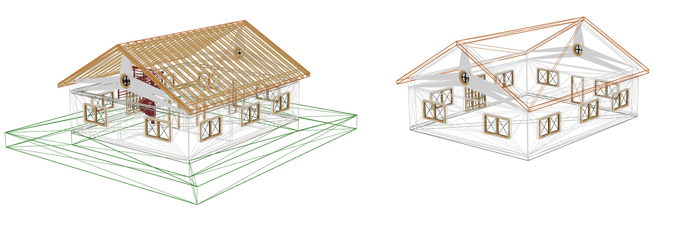
Figuur 12Wireframe representatie die het verschil tussen een gefilterde (rechts) en ongefilterde (links) 1:1 vertaling/mapping weergeeft
3.3 Shell extractie
Een bestand dat een GIS data model volgt kan alleen worden gecreëerd door een vorm van shell extractie. Bij shell extractie wordt een schil model gemaakt van één of meer BIM modellen. De shell extractie draagt bij aan een betere interoperabiliteit, hoewel hierbij een deel van de oorspronkelijke data verloren gaat. Dit geldt zowel voor de geometrie als de attributen. Volumetrische externe objecten zoals wanden en daken worden oppervlaktes die deel zijn van een volumetrische schil. Interne elementen kunnen volledig vervallen. Dit proces is dus ook niet omkeerbaar.
Figuur 13Een wireframe representatie van een BIM model (links) en een exterieur GIS model (rechts).
Aanvullend is shell extractie ook een complex proces waarbij problemen kunnen optreden. Schil modellen met een hoge precisie kunnen alleen gecreëerd worden van BIM modellen die voldoen aan strenge eisen. Deze eisen zijn niet alleen semantisch maar ook geometrisch. Dit maakt het lastig om deze eisen af te dwingen met een Informatie Levering Specificatie (ILS/IDS). Zelfs als alle eisen nageleefd worden zijn er omstandigheden waar het schil model niet correct gemaakt kan worden.
Schil modellen met een lagere precisie stellen ook lagere eisen aan het BIM model dat verwerkt wordt. Zo kunnen blok modellen of voxelisaties worden gemaakt van bijna alle BIM modellen, ook van schets/klad modellen. Hoe hoger de verwachte precisie van het GIS model, hoe strenger de eisen en hoe complexer het proces om ze te creëren.
Het genereren van schil modellen van BIM bestaden is vooral beschikbaar als expermintele software. Verschillende methodes worden nog steeds ontwikkeld en onderzocht, er is nog geen standaard methode voor deze processen gedefineerd. Dit zorgt ervoor dat de beschikbare software werken met andere methodes en dus ook andere output kunnen genereren op basis van dezelfde BIM input. Daarnaast werken niet alle shell extractie software volgens het LoD framework dat in GIS wordt aangehouden. Zo genereert de toepassingBIMShell alleen een hoge kwaliteit schil en een voxelisatie. De toepassing IfcEnvelopeExtractor volgt een aangepaste/niet standaard intepretatie van het LoD framework van Biljecki et al.. Dit zorgt ervoor dat de output erg kan verschillen tussen verschillende toepassingen en software pakketten.
Noot: Aanbeveling voor shell-extractie standaard?
Ondanks al deze problemen leveren deze schil modellen op basis van een BIM bron ook erg veel voordelen. De resulterende modellen hebben een kleine bestandsgrootte en worden ondersteunt door vrijwel alle beschikbare GIS software. Deze modellen zijn daarnaast ook de enige modellen die voor complexe GIS analyses gebruikt kunnen worden.
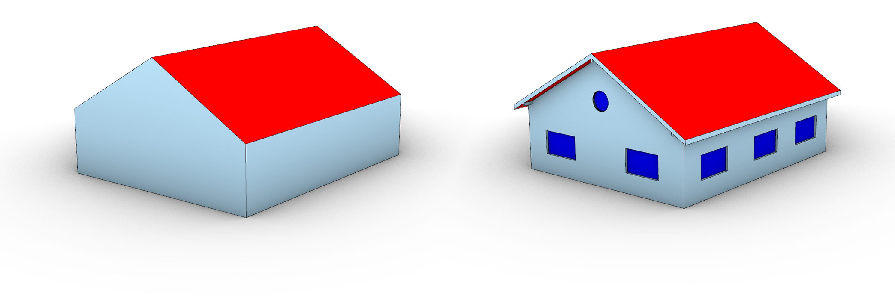
Figuur 14De hoogste kwaliteit beschikbare modellen in 3DBAG zijn LoD2.2 modellen (links). Als BIM als GIS geometrie op grote schaal zou kunnen worden toegepast zou dit kunnen worden verrijkt naar LoD3.2/3.3 (rechts).
Deze schil modellen zijn niet alleen waardevol voor de realisatie of analyse van het gebouw dat is omgezet maar kunnen ook worden gebruik om bestaande stedelijke modellen aan te vullen of te verrijken. De kwaliteit van BIM modellen is hoger dan die van remote-sensing metinging (zoals laserscans) waarop de meeste stedelijke modellen zijn gebaseerd. De GIS modellen van een BIM bron kunnen daardoor dus ook een hogere kwaliteit/meer detail hebben. GIS schil modellen van een BIM bron kunnen aanvullend worden gebruikt in stedelijke GIS modellen. Daarnaast kan een BIM model sneller worden omgezet naar een GIS schil model dan de in-situ metingen meestal worden gedaan. Daardoor kunnen de modellen ook gebruikt worden om een stedelijk model sneller te updaten.
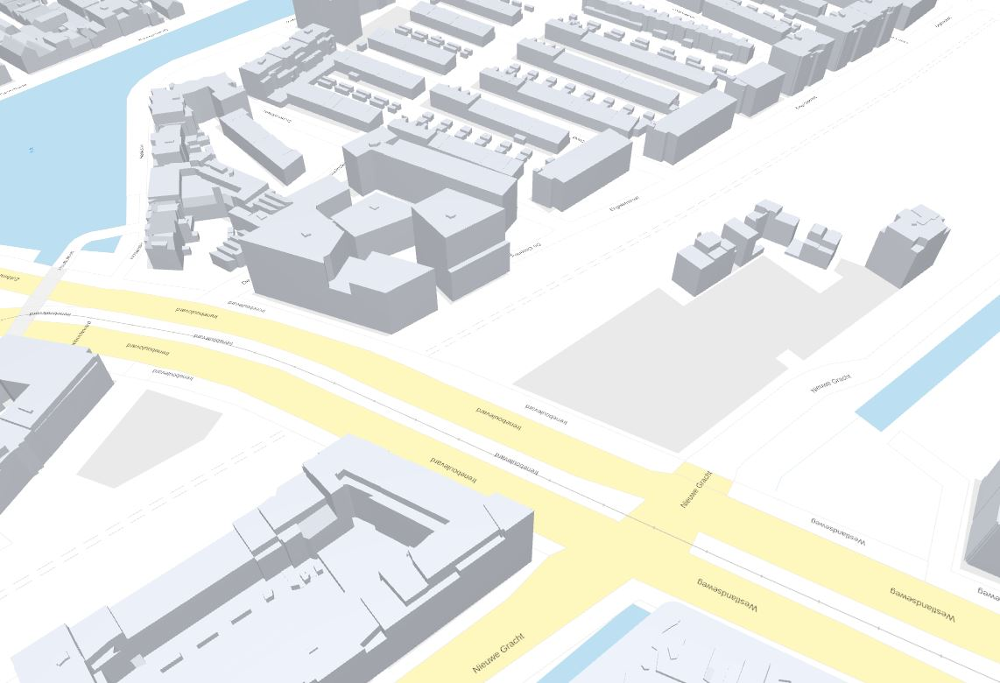
Figuur 15De spoorzone van Delft is een gebied waar veel nieuwbouw plaatsvind en laat zien dat 3DBAG vertraagd update. Twee gebouwen zijn wel aanwezig in 2Dbag (de grijze uitlijnen) maar een 3D representatie is nog niet beschikbaar. BIM gebaseerde GIS modellen kunnen hier een uitkomst bieden.
3.4 Hybride extractie
Eventuele middenwegen tussen 1:1 en shell extractie is ook onderzocht. Wat dan?
Error
Cannot GET /04%20Geometrie%20BIM%20naar%20Geo.md
Error
Cannot GET /05%20Attribuut%20BIM%20naar%20Geo.md
4. Eisen aan het BIM-model
4.1 Informatie Levering Specificatie
Jeffrey?
5. Toolkit
5.1 Handleiding/HowTo
Applicatie
BIM/IFC direct openen
1:1 vertaling
Gefilterde 1:1 vertaling
Shell extractie
CityGML LoD support
CityJSON LoD support
ESRI ArcGIS Pro
✅
✅
✅
❌
❌
❌
IFC2GeoJSON
❌
✅
✅
❌
❌
❌
Save Software FME
❌
✅
✅
❌
❌
❌
IfcConvert
❌
✅
✅
❌
❌
❌
BIMShell
❌
✅
✅
✅
❌
❌
IfcEnvelopeExtractor
❌
✅
✅
✅
✅
✅
✅ = volledige support
❌ = geen support
5.2 BIM bestanden in GIS omgeving brengen
5.2.1 ESRI ArcGIS Pro
5.3 1:1 vertaling/mapping
5.3.1 Save Software FME
5.4 Shell extraction
5.4.1 BIMShell
5.4.2 IfcEnvelopeExtractor
De IfcEnvelopeExtractor is een open source C++ applicatie die BIM modellen in de IFC encoding kan omzetten naar Wavefront OBJ, STEP en CityGML CityJSON. Deze omzetting is niet alleen een 1:1 omzetting van IFC naar een ander GIS bestandstype. De applicatie zet de geometrie van het input bestand om naar GIS representaties volgens de GIS syntax. De conversie volgt hierbij het LoD framework van Biljecki et al.. Aanvullend zijn er een aantal experimentele LoDs en een 1:1 conversie beschikbaar. De tool support de conversie van IFC naar in totaal 17 verschillende LoDs, zie appendix ... voor meer informatie.
De applicatie is toegankelijk via de GitHub pagina. Hier zijn de source code en gecompilde executables beschikbaar. De gecompilde executables zijn beschikbaar voor zowel Windows als Linux (Ubuntu). Gedetaillerde informatie over de methodes die ontwikkeld zijn in de code om de conversie uit te voeren, kan worden gevonden in het technische report van versie 0.2.6. Dit report is gebaseerd op een eerdere versie van de code, versie 0.3.x is de huidige versie, waarbij de dieper liggende logica gelijk of vergelijkbaar is gebleven.
Controle over de applicatie kan op twee manieren worden uitgeoefend, via een Graphical User Interface (GUI) of via een configuratie bestand (ConfigJSON). De GUI is makkelijker en sneller om mee te werken, zeker voor gebruikers die geen programmeer ervaring hebben. De GUI geeft echter enkel controle over een sub-set van alle beschikbare instellingen. Dit is gedaan om de menu's overzichtelijk te houden. De beschikbare instellingen zijn gekozen op basis van wat de meest gebruikte instellingen zijn. Als deze instellingen te beperkend zijn moet er met de ConfigJSON gewerkt worden. De ConfigJSON is een lijst met instellingen in een JSON encoding.
5.4.2.1 Workflow
5.4.2.1.1 bestands correctie
Niet ieder model kan door de IfcEnvelopeExtractor direct verwerkt worden. De software applicatie is ontwikkeld om te werken op veel verschillende modellen, maar niet ieder probleem kan ontweken worden. Daarom moeten modellen mogelijk handmatige gecorrigeerd worden voordat ze kunnen worden verwerkt. Er zijn aantal onderwerpen waarvan het aangeraden wordt om te controleren/corrigeren voor verwerking. Als alleen de buitenkant van het gebouw/bouwwerkt geexporteerd/converteerd moet worden hoeft alleen de georeferentie en het IfcClass gebruik gechecked te worden. Als ook de binnenkant geexporteerd/converteerd moet worden is het ook aangeraden dat de IfcSpace hiërarchie en de IfcBuildingStorey gerelateerde objecten gechecked worden.
Georeferencing
De IfcEnvelopeExtractor neemt de georeferentie over van het IFC bestand. Dit betekend dat als het model correct gegeorefereerd is dat het GIS model direct op de correcte locatie zal worden geplaatst. Echter is de aanwezigheid en kwaliteit van de georeferentie in IFC niet altijd gegarandeerd. Applicaties zoals IfcGref maken het mogelijk om correcte georeferentie data van een bestand te controleren en eventueel toe te voegen of te corrigeren. De online versie van IfcGref kan IFC bestanden van maximaal 100mb verwerken. Als de bestanden zwaarder zijn dan 100mb kan vanaf de GitHub pagina de code verkregen worden om de applicatie lokaal te gebruiken. De 100mb limiet is dan niet meer aanwezig.
Class gebruik
De IfcEnvelopeExtractor gebruikt maar een sub-set van de IfcClasses die beschikbaar zijn in een volledig IFC bestand. De classes die gebruikt worden zijn classes die tastbare objecten/geometrie vertegenwoordigen die ruimtes van elkaar scheiden. Bijvoorbeeld wanden, deuren en ramen. Deze objecten scheiden kamers van elkaar, maar ook de kamers binnen een gebouw en de lucht aan de buitenkant van een gebouw. Meubels en leidingen zijn ook tastbaar, maar scheiden niet ruimtes van elkaar, dus meestal spelen deze geen rol bij het overzetten van IFC naar GIS.
Standaard gebruikt de applicatie twaalf verschillende classes: IfcBeam, IfcColumn, IfcCovering, IfcCurtainWall, IfcDoor, IfcMember, IfcPlate, IfcRoof, IfcSlab, IfcWall, IfcWallStandardCase, IfcWindow classes. Deze kleine selectie uit de 700+ classes is voor de meeste gebouwen genoeg om een correcte extractie uit te voeren. Echter kan het zijn dat een gebouw andere classes gebruikt die belangrijk zijn voor de overzetting. In dat geval kan de lijst aangepast en/of uitgebreid worden via de GUI en de ConfigJSON. Ook zijn deze twaalf verschillende classes gekozen op basis van gebouwen, mogelijk hebben bruggen of tunnels andere eisen.
Deze filtering van object class is belangrijk om de processen die de applicatie uitvoert simpel te houden. Zelfs met correcte class selectie zijn dit zware processen die mogelijk traag en instabiel kunnen zijn. Het is daarom belangrijk dat de classes die geselecteerd zijn ook echt de functie uitvoeren waarvoor ze bedoeld waren. Als een IfcSlab wordt gebruikt om een weg te representeren die naast een gebouw ligt, dan heeft de applicatie maar een beperkte mogelijkheid om dit correct te detecteren als deel van de omligging en niet deel van het gebouw. Vaak zal dus deze weg worden gezien als deel van het gebouw, met alle gevolgen van dien. Een class waar vaak problemen mee optreden is de IfcBuildingElementProxy class. Deze class wordt vaak, incorrect, gebruikt voor alle objecten waarvan het onduidelijk is onder welke class ze eigenlijk behoren. De objecten die deze class gebruiken kunnen dus een combinatie zijn van voor de applicatie belangrijke en onbelangrijke objecten. De applicatie zal dus of deze objecten allemaal negeren (als er niet gefilterd wordt op IfcBuildingElementProxy) of allemaal gebruiken (als er wel gefilterd wordt op IfcBuildingElementProxy).
Het is belangrijk dat de classes in een bestand dus correct gebruikt worden. Alle classes die deel maken van een gebouw kunnen niet gebruikt worden om de omgeving te modelleren. Het gebruik IfcBuildingElementProxy wordt afgeraden. Als deze class wel gebruikt wordt, wordt het aangeraden om het gebruik ervan zoveel mogelijk te beperken. Ook is het belangrijk dat alle objecten die in die class gebruikt worden of wel belangrijk zijn voor de extractie, of allemaal onbelangrijk.
Als dit niet het geval is zal een IFC bestand met de hand moeten worden gecorrigeerd voordat de applicatie het bestand kan verwerken. Met de hand kunnen veel objecten verwijderd worden of de class type van een object veranderd worden.
IfcSpace gebruik
De IfcEnvelopeExtractor maakt het ook mogelijk om binnenruimtes te exporteren. Bij v3.0.x is dit nog steeds zwaar gebaseerd op de IfcSpace class in het IFC bestand. Een IFC bestand kan drie verschillende compositie type kamers hebben: COMPLEX, ELEMENT en PARTIAL. COMPLEX betekend dat de IfcSpace een groep of cluster van kamers/ruimtes representeert. ELEMENT betekend dat de IfcSpace een enkele kamer/ruimte representeert. PARTIAL betekend dat de IfcSpace een deel van een kamer/ruimte representeert. De applicatie gebruikt alleen de ELEMENT IfcSpace objecten.
In bijna ieder model waarbij kamers/ruimtes zijn gegroepeerd is de compositie type incorrect. Bijna alle IfcSpace objecten hebben type ELEMENT. Het maakt geen verschil of deze objecten gebruikt worden om daadwerkelijk een kamer/ruimte te representeren of om een groep kamers/ruimtes te groeperen. Vaak is dit niet de fout van de modelleur maar de fout van de BIM software. Applicaties zoals Revit zullen altijd incorrect IfcSpace objecten schrijven naar IFC.
Dit zorgt er helaas voor dat als er complexe groeperingen van ruimtes in een IFC bestand aanwezig zijn dat deze altijd met de hand zullen moeten worden gecorrigeerd als interieur output gewild is. Als geen interieur output gewild is dan kunnen de foutive IfcSpace objecten negeert worden. Net zoals bij de tastbare objecten negeerd de applicatie objecten die niet direct nodig zijn.
IfcBuildingStorey gerelateerde objecten
De IfcEnvelopeExtractor maakt het mogelijk om verdiepingen of informatie gerelateerd aan de verdiepingen te exporteren. Voor LoD0.2 en LoD0.3 export word een horizontale doorsnede gemaakt door het gebouw om een oppervlakte, of groep van oppervlaktes te maken. Voor LoD0.2 wordt dit door alle gebruikte objecten van het IFC model gedaan. Maar voor de LoD0.3 doorsnede worden alleen de objecten gebruikt die via IfcRelContainedInSpatialStructure objecten aan de verdieping (IfcBuildingStorey) gerelateerd zijn.
Deze relatie tussen verdieping/IfcBuildingStorey en de andere producten is soms incorrect en moet gecorrigeerd worden als dat mogelijk is. Het beste is als dit direct gecorrigeerd kan worden in de bron waar de modellen vandaan komen. Als deze relatie verkeerd is in IFC dan is het waarschijnlijk ook incorrect in Revit, ArchiCAD of andere bron. Als het bronbestand niet beschikbaar is dan kan als alternatief een IFC editor gebruikt worden. Het veranderen van de relatie tussen objecten en verdiepingen is relatief makkelijk en door veel IFC editors ondersteunt.
Een groter probleem is als een object met de goede verdieping is gerelateerd maar zo hoog is dat het meer dan een enkele verdieping overbrugt. Over het algemeen wordt het afgeraden dit soort objecten in een IFC model te hebben. Er is tot nu toe geen oplossing voor dit probleem gevonden. Het is in theorie mogelijk om hetzelfde object via twee (of meer) verschillende IfcRelContainedInSpatialStructure te relateren aan twee (of meer) verschillende verdiepingen. Dit is echter geen standaardoplossing en de meeste IFC viewers en editors zullen hier niet goed mee omgaan.
5.4.2.1.2 Applicatie instellen
Zoals eerder vermeld kan de applicatie op twee manieren ingesteld worden, via de GUI en via de ConfigJSON. Als eerste behandelen we de GUI. Aanvullend worden via de ConfigJSON alle instellingen behandeld die niet via de GUI configureerbaar zijn.
GUI
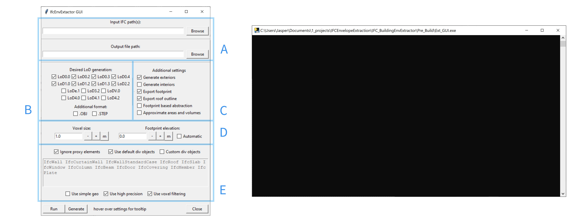
Figuur 16De GUI van de IfcEnvelopeExtractor bestaat uit een menu (links) en een console (rechts). Via het menu kunnen de meest voorkomende instellingen worden aangepast. Via de console communiceerd de software met de gebruiker
De GUI is opgedeeld in groepen van instellingen die aan elkaar gerelateerd zijn. In de afbeelding hierboven zijn de groepen weergegeven.
A: Algemene I/O instellingen
B: Verwachte output LoD en encoding
C: Aanvullende instellingen
D: Numerieke parameters
E: Geometrische parameters
De eerste groep zijn de algemene I/O instellingen (A). Dit gaat over waar de input bestanden staan en waar de output naartoe moet worden geschreven. Dit kan worden geconfigureerd door de bestandslocaties in de tekst balken in te vullen of via de "browse" button. De applicatie support meerdere input bestanden. Dus modellen die zijn opgesplitst in aspect modellen kunnen door de applicatie gebruikt worden. Het is aan te raden om modellen/bestanden waarvan het bekend is dat ze geen belang spelen voor de omzetting niet als input te gebruiken. Bijvoorbeeld modellen met alleen leidingen hoeven niet als input gebruikt te worden. Om de IFC objecten te selecteren die belangrijk zijn voor de omzetting leest het programma ieder IFC bestand in om vervolgens de selectie te maken. Als de selectie gedeeltelijk van te voren gemaakt kan worden door bepaalde bestanden buiten te sluiten dan zal dit het omzettingsprocess versnellen.
De tweede groep zijn de verwachte output LoD en encoding (B). Afhankelijk van het doel van de GIS export kan hier een selectie van gemaakt worden. De eerste drie rijen van deze lijst is gesorteerd in complexiteit. De vierde rij valt hierbuiten, in deze rij staat de 1:1 vertaling/mapping. Dit zijn meestal relatief trage processen die maar in beperkte mate complex zijn.
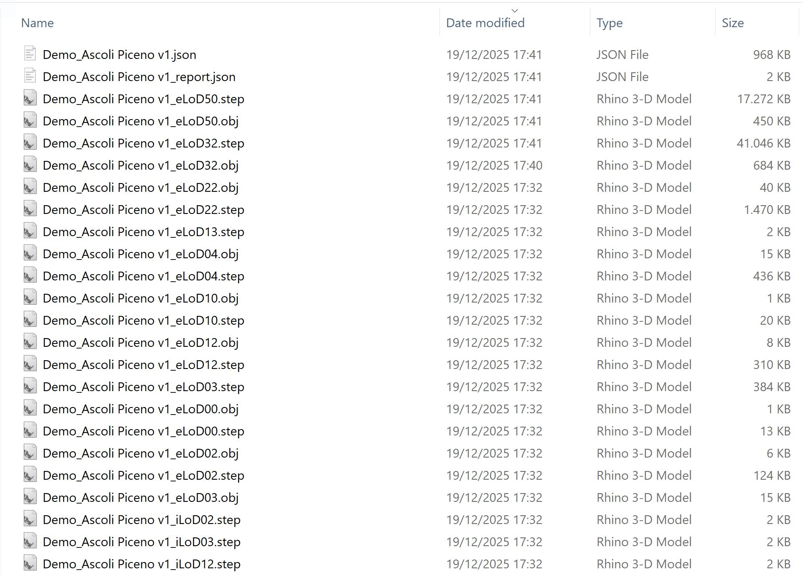
Figuur 17Voorbeeld van de resulterende bestanden als alternatieve encoding output wordt gebruikt.
Onderaan deze groep kan de encoding aangevuld worden. De tool zal altijd een CityJSON bestand genereren. Maar het is mogelijk om extra kopieën te genereren in .obj en/of .STEP encodig. Deze bestanden zijn enkel geometrisch. Semantische data zoals attributen woren niet in deze bestanden opgeslagen. De bestanden ondersteunen ook geen multi LoD, daarom wordt iedere LoD in een los bestand geplaatst. Deze kopieën hebben dezelfde naam als de gekozen output naam, maar ze zullen eLoDxx en iLoDxx toegevoegd hebben om de buiten- en binnenkant van het gebouw te representeren. Waarbij de xx vervangen wordt door de daadwerkelijke LoD. Deze instelling is nog niet volledige ondersteund voor iedere LoD door de software
De derde groep zijn de aanvullende instellingen (C). Dit zijn instellingen die een abstractie extra detail kan geven, of juist detail kan wegnemen. Zo kan bijvoorbeeld via deze instellingingen gekozen worden voor alleen een export van het interieur. Er zijn twee instellingen die niet per se voor zichzelf spreken en extra uitleg nodig hebben.
De eerste is "Footprint based abstraction". "Footprint based abstraction" dicteert of de modellen moeten worden gelimiteerd door de voetafdruk. Voor LoD1.2, 1.3 en 2.2 worden de oppervlaktes die het dak representeren naar de voetafdruk hoogte geëxtrudeerd. Dit betekend dat het dak de omvang van het gebouw bepaald. Als het dak over de voetafdruk van het gebouw heen hangt dan wordt het uiteindelijk grondoppervlak van de LoD1.2, 1.3 en 2.2 abstractie groter dan de daadwerkelijke voetafdruk. Als "Footprint based abstraction" wordt aangezet dan worden de dakoppervlaktes eerst bijgesneden zodat er nergens overhang is over de voetafdruk. Hierdoor zijn de grondoppervlaktes van LoD1.2, 1.3 en 2.2 identiek aan de daadwerkelijke voetafdruk van het gebouw. Een bijeffect hiervan is dat als er overhang in het gebouw aanwezig is de dakoppervlaktes nu kleiner zijn de LoD0.2, 0.3 en 0.4.
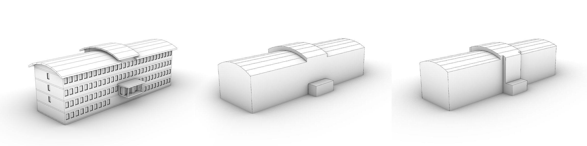
Figuur 18Visualisatie van het verschil tussen een LoD2.2 vorm die gebaseerd is op de roof outline (midden), en een LoD2.2 vorm die is beperkt door de voetafdruk (rechts). Beide modellen zijn gebaseerd op dezelfde input (links).
De tweede is "Approximate areas and volumes". Zoals het woord "approximate" suggereert is dit een inschatting en niet de daadwerkelijke waarde. IFC modellen zijn geometrisch complex en het is niet altijd mogelijk om een gesloten schil te creëren. Zonder een geslote schil is het moeilijk de het volume te berekenen. Als "Approximate areas and volumes" wordt aangezet dan worden de volumes en oppervlaktes van de schillen berekend op basis van de voxelisatie. De kwaliteit en betrouwbaarheid van deze resultaten zijn erg afhankelijk van de grootte van de voxels die zijn gekozen.
De vierde groep zijn de Numerieke parameters (D). Dit zijn de enige numerieke controle die de gebruiker over de applicatie heeft. De tool gebruikt voxels voor veel processen, hierdoor is het lastig om een correcte grootte te kiezen. Over het algemeen is iets kleiner dan de grootte van de kleinste nis gedeeld door twee in het model een goede waarde. Mocht dit onbekend zijn dan is 0.2 meter meestal goed.
De voetafdruk hoogte is de waarde waarop de voetafdruk zich bevindt. Voor de meeste input modellen moet dit met de hand gemeten worden. Vaak is 0 correct, maar soms wordt het lokale coördinatensysteem gebruikt om foutieve georeferencie te compenseren. Als het IFC model gemaakt is volgens de BIM basis ILS van DigiGO dan kan de automatische instelling gebruikt worden om de tool zelf de voetafdruk hoogte te vinden. Het programma zoekt dan naar een verdieping die begint met "00" dat wordt gevolgd door een spatie.
De vijfde groep zijn de Geometrische parameters(E). Deze instellingen gaan over de geometrie van het IFC bestand dat de tool gebruikt. De bovenste rij zijn drie check boxes die gaan over het tekst vak eronder. Dit tekst vak laat alle IFC classes zien de worden gebruikt door de software. De IfcBuildingElementProxy objecten kunnen hier aan toegevoegd worden door "Ignore Proxy Elements" uit te zetten. De standaard objecten worden uit deze lijst gehaald door "Use default div Object" uit te zetten. Er kunnen zelf object classes toegevoegd worden aan het tekst vak door het te ontgrendelen door "Custom div objects" aan te zetten. De software gebruikt alleen bestaande IfcClasses. Dit is niet hoofdletter gevoelig.
De onderste rij zijn weer drie check boxes. Dit zijn nog enkele losse instellingen die gerelateerd zijn aan de geometrie van het IFC bestand. "Use simple geo" dicteerd of void objecten moeten worden toegepast op volumetrische objecten. "Use high precision" dicteerd of een precisie van 1e-6m of 1e-4m moet worden gebruikt. "Use voxel filtering" dicteerd of er moet worden gefilterd met voxel intersecties voordat complexere filters worden toegepast. Voxels gebruiken om te filteren is sneller, maar ook minder precies.
Als de instellingen zijn bepaald kan het programma direct worden gestart door de "Run" knop in te drukken, of een ConfigJSON kan worden gemaakt door de "Generate" knop te drukken.
ConfigJSON
5.4.2.1.3 Samenvoegen van GIS bestanden
De output van de BIM2Geo converter is een model van een enkel bouwwerk, of (afhankelijk van de BIM model) een relatief kleine cluster van gebowuen. Om dit model in de omgeving the plaatsen is het mogelijk om de CityJSON output samen te voegen met een CityJSON tegel van bijvoorbeeld de 3D bag. Op dit moment is het nog niet mogelijk om dit direct met de BIM2Geo converter te doen. Een alternatieve oplossing is het gebruiken van cijo (CityJSON/io).
5.4.2.2 Output specificatie
De IfcEnvelopeExtractor ondersteunt 12 verschillende "reguliere" LoD. Deze LoD volgen een aangepaste LoD framework dat zowel het framework van de CityGML2.0/3.0 standaard en van Biljecki et al. combineerd en op uitbreid. Een deel van de verschillen komt voort uit benodigde interpretatie van regels die niet duidelijk gedefinieerd zijn in de gebruikte/bestaande frameworks. Aanvullend is het framework van Biljecki et al. gebaseerd op modellen die zijn gemaakt op basis in-situ metingen gecombineerd met 2D polygonen. Hier zitten andere beperkingen aan dan aan modellen gebaseerd op BIM. Hierdoor zijn niet alle aspecten van het framework passend.
Een deel van de volgende samenvatting van de output kan ook worden gevonden in het technische rapport van de IfcEnvelopeExtractor V0.2.6. Dit document geeft ook een uitgebreide uitleg over de methodes die zijn gebruikt om de abstractie modellen te creëren. Echter is versie V0.3.2 van de software beschikbaar tijdens het schrijven van dit document. V0.3.2 gebruikt een aantal andere regels en methodes. Daarnaast is ook de mogelijke output uitgebreid, LoD4 werd nog niet ondersteunt door v0.2.
Niet iedere LoD die beschikbaar is in het framework van Biljecki et al. wordt behandeld in deze lijst. Dat betekend niet dat ze niet belangrijk zijn, alleen dat de exctractor deze LoD niet als output genereerd.
5.4.2.2.1 LoD0.0
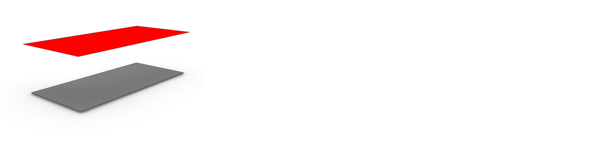
Figuur 19Visualisatie van LoD0.0 gebaseerd op het institute IFC model van IAI/KIT
2D bounding box representatie van het input BIM model.
De representatie bestaat uit:
Dak oppervlak
$n = 1$
Type: RoofSurface of +ProjectedRoofOutline als geen voetafdruk extractie is gekozen.
Het bovenoppervlak van de kleinst georiënteerde bounding box om het totale model heen.
Grond/voetafdruk oppervlak
$n = 1$
Type: GroundSurface
Het bovenoppervlak van de kleinst georiënteerde bounding box alle objecten die +-0.5 m zijn geplaatst van de voetafdruk
5.4.2.2.2 LoD0.2
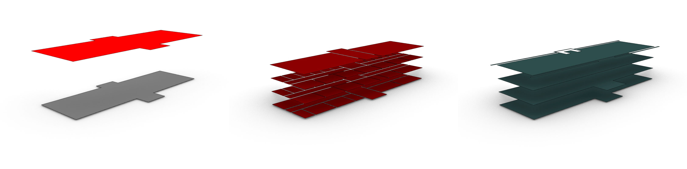
Figuur 20Visualisatie van LoD0.2 gebaseerd op het institute IFC model van IAI/KIT. Dak en voetafdruk (links), de kamers (midden) en de verdiepingen (rechts) zijn los weergegeven
Simpel 2.5D oppervlak representatie van het input BIM model waarbij ieder oppervlak een normaal richting heeft van (0,0,1). Het model is 2.5D tussen oppervlaktes van dezelfde bron. Overhangende delen zijn toegestaan tussen oppervlaktes die andere types hebben of een andere bron hebben (zoals verschillende verdiepingen).
De representatie bestaat uit:
Dak oppervlak
$n \geq 1$
Type: RoofSurface of +ProjectedRoofOutline als geen voetafdruk extractie is gekozen.
Een oppervlak dat is gemaakt door alle top oppervlaktes van de dak structuur to projecteren op de xy vlak. De geprojecteerde oppervlaktes die tegen elkaar rusten worden samengevoegd. Deze oppervlaktes worden op de voetafdruk hoogte geplaatst als geen voetafdruk output wordt gegenereerd. Als er wel voetafdruk output wordt gegenereerd worden deze oppervlaktes op de max z hoogte van het BIM model geplaatst.
Grond/voetafdruk oppervlak
$n \geq 1$
Type: GroundSurface
Een oppervlak dat is gemaakt door een sectie te maken door het hele IFC model ter hoogte van de voetafdruk z waarde. Horizontale oppervlaktes die dicht bij deze sectiehoogte liggen (±0.15m) worden ook aan deze selectie toegevoegd. De resulterende vlakke oppervlaktes worden samengevoegd. De binnenringen die schachten en vergelijkbare elementen representeren worden verwijderd. Deze representatie is identiek voor de LoD0.3 and 0.4 grond/voetafdruk oppervlak.
Verdiepingsoppervlak
Als IFC bestand IfcBuildingStorey objecten bevat $n \geq 1$ anders $n = 0$.
Type: FloorSurface
Oppervlaktes die zijn gemaakt door een sectie te maken door het hele IFC model ter hoogte van iedere verdieping. Horizontale oppervlaktes die dicht bij deze sectiehoogte liggen (±0.15m) worden ook aan deze selectie toegevoegd. De resulterende vlakke oppervlaktes worden samengevoegd.
Kamer oppervlak
Als IFC bestand IfcSpace objecten bevat $n \geq 1$ anders $n = 0$.
Type: +ProjectedCeilingOutline
Oppervlaktes die zijn gemaakt door, per kamer, de plafond oppervlaktes plat te projecteren op de minimale z hoogte van de kamer. Deze vlakke oppervlaktes worden samengevoegd om een oppervlak te maken per kamer.
5.4.2.2.3 LoD0.3
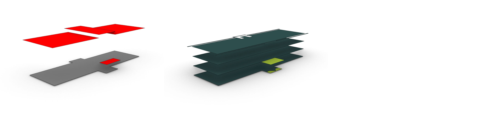
Figuur 21Visualisatie van LoD0.3 gebaseerd op het institute IFC model van IAI/KIT. Dak en voetafdruk (links) en de verdiepingen (rechts) zijn los weergegeven
2.5D oppervlak representatie van het input BIM model waarbij ieder oppervlak een normaal richting heeft van (0,0,1). Het model is 2.5D tussen oppervlaktes van dezelfde bron. Overhangende delen zijn toegestaan tussen oppervlaktes die andere types hebben of een andere bron hebben (zoals verschillende verdiepingen).
De representatie bestaat uit:
Dak oppervlak
$n \geq 1$
Type: RoofSurface
Oppervlaktes die zijn gemaakt op basis van de dak structuur van het input model. De top oppervlaktes van het dak worden geïsoleerd en gegroepeerd als ze elkaar aanraken of snijden. Per groep wordt een plat oppervlak gemaakt door deze groepen plat te projecteren, samen te voegen en op de top z hoogte te plaatsen van de originele groep. Overlap tussen de verschillende oppervlaktes wordt geëlimineerd door de lager gelegen oppervlaktes te trimmen.
Grond/voetafdruk oppervlak
$n \geq 1$
Type: GroundSurface
Een oppervlak dat is gemaakt door een sectie te maken door het hele IFC model ter hoogte van de voetafdruk z waarde. Horizontale oppervlaktes die dicht bij deze sectiehoogte liggen (±0.15m) worden ook aan deze selectie toegevoegd. De resulterende vlakke oppervlaktes worden samengevoegd. De binnenringen die schachten en vergelijkbare elementen representeren worden verwijderd. Deze representatie is identiek voor de LoD0.2 and 0.4 grond/voetafdruk oppervlak.
Verdiepings oppervlak
Als IFC bestand IfcBuildingStorey objecten bevat $n \geq 1$ anders $n = 0$.
Type: FloorSurface en OuterFloorSurface
Oppervlaktes die zijn gemaakt door een sectie te maken door het hele IFC model ter hoogte van iedere verdieping. Horizontale oppervlaktes die dicht bij deze sectiehoogte liggen (±0.15m) worden ook aan deze selectie toegevoegd. Voor ieder oppervlak wordt getest of het binnen of buiten het gebouw ligt. Per group worden de vlakke oppervlaktes worden samengevoegd.
5.4.2.2.4 LoD0.4
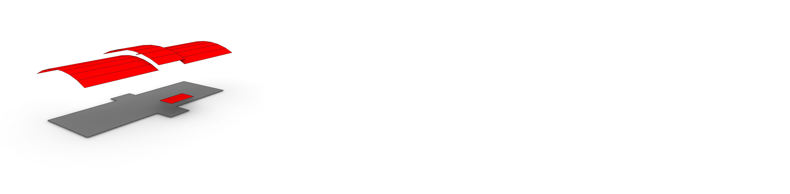
Figuur 22Visualisatie van LoD0.4 gebaseerd op het institute IFC model van IAI/KIT.
2.5D oppervlak representatie van het input BIM model waarbij ieder oppervlak dezelfde vorm behoud als de geometrische bron. Het model is 2.5D tussen oppervlaktes van dezelfde bron. Overhangende delen zijn toegestaan tussen oppervlaktes die andere types hebben of een andere bron hebben (zoals verschillende verdiepingen).
De representatie bestaat uit:
Dak oppervlak
$n \geq 1$
Type: RoofSurface
Oppervlaktes die zijn gemaakt op basis van de dak structuur van het input model. De top oppervlaktes van het dak worden geisoleerd en gegroepeerd als ze elkaar aanraken of snijden. Overlap tussen de verschillende oppervlaktes wordt geelimineerd door de lager gelegen oppervlaktes te trimmen.
Grond/voetafdruk oppervlak
$n \geq 1$
Type: GroundSurface
Een oppervlak dat is gemaakt door een sectie te maken door het hele IFC model ter hoogte van de voetafdruk z waarde. Horizontale oppervlaktes die dicht bij deze sectiehoogte liggen (±0.15m) worden ook aan deze selectie toegevoegd. De resulterende vlakke oppervlaktes worden samengevoegd. De binnenringen die schachten en vergelijkbare elementen representeren worden verwijderd. Deze representatie is identiek voor de LoD0.2 and 0.3 grond/voetafdruk oppervlak.
5.4.2.2.5 LoD1.0
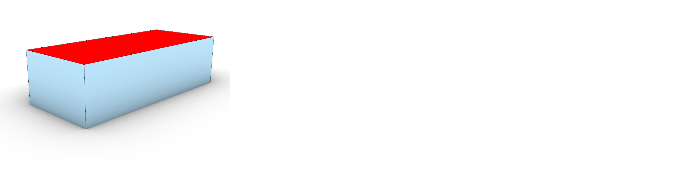
Figuur 23Visualisatie van LoD1.0 gebaseerd op het institute IFC model van IAI/KIT.
3D bounding box representatie van het input BIM model.
De representatie bestaat uit:
Buitenschil
$n = 1$
Type: RoofSurface, GroundSurface of WallSurface
De kleinst georiënteerde bounding box om het totale model heen.
5.4.2.2.6 LoD1.2
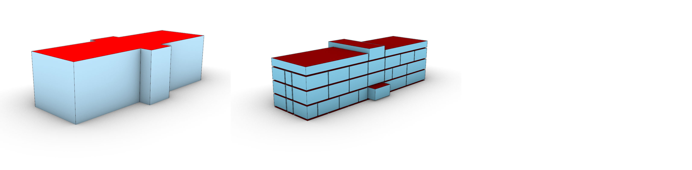
Figuur 24Visualisatie van LoD1.2 gebaseerd op het institute IFC model van IAI/KIT. Buitenschil (links) en de kamers (rechts) zijn los weergegeven
2.5D volumetrische representatie van het input BIM model met unform vlakke boven en onder oppervlaktes.
De representatie bestaat uit:
Buitenschil
$n \geq 1$
Type: RoofSurface, GroundSurface of WallSurface
Volume kan gemaakt worden op twee manieren:
door het LoD0.2 dakoppervlak naar de grondhoogte te extruderen
door het LoD0.2 grondoppervlak naar de tophoogte van het gebouw te extruderen.
Binnenschil
Als IFC bestand IfcBuildingStorey objecten bevat $n \geq 1$ anders $n = 0$.
Type: CeilingSurface, FloorSurface of InteriorWallSurface
Volume dat per kamer is gemaakt door de LoD0.2 +ProjectedCeilingOutline represenatie te extruderen naar de tophoogte van de kamer.
5.4.2.2.7 LoD1.3
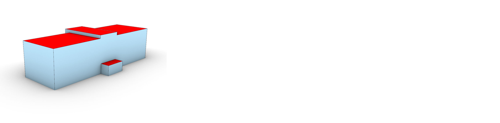
Figuur 25Visualisatie van LoD1.3 gebaseerd op het institute IFC model van IAI/KIT.
2.5D volumetrische representatie van het input BIM model met vlakke oppervlaktes. Ieder oppervlak heeft een normaal richting met een z-component dat gelijk is aan 1 of 0.
De representatie bestaat uit:
Buitenschil
$n \geq 1$
Type: RoofSurface, GroundSurface of WallSurface
Volume dat is gemaakt door de LoD0.3 dakoppervlaktes naar de grondhoogte te extruderen. De resulterende volumes worden samengevoegd. Het is mogelijk om dit volume bij te trimmen zodat de voetafdruk van dit volume overeen komt de de LoD0.2 voetafdruk.
5.4.2.2.8 LoD2.2
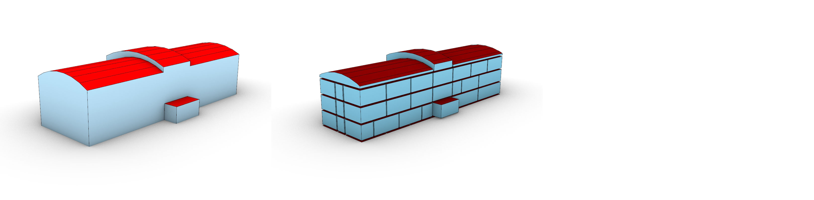
Figuur 26Visualisatie van LoD2.2 gebaseerd op het institute IFC model van IAI/KIT. Buitenschil (links) en de kamers (rechts) zijn los weergegeven
2.5D volumetrische representatie van het input BIM model.
De representatie bestaat uit:
Buitenschil
$n \geq 1$
Type: RoofSurface, GroundSurface of WallSurface
Volume dat is gemaakt door de LoD0.4 dakoppervlaktes naar de grondhoogte te extruderen. De resulterende volumes worden samengevoegd. Het is mogelijk om dit volume bij te trimmen zodat de voetafdruk van dit volume overeen komt de de LoD0.2 voetafdruk.
Binnenschil
Als IFC bestand IfcBuildingStorey objecten bevat $n \geq 1$ anders $n = 0$.
Type: CeilingSurface, FloorSurface of InteriorWallSurface
Volume dat per kamer is gemaakt door de plafondoppervlaktes van de kamer te extruderen naar de minimale vloer hoogte van de kamer.
5.4.2.2.9 LoD3.2
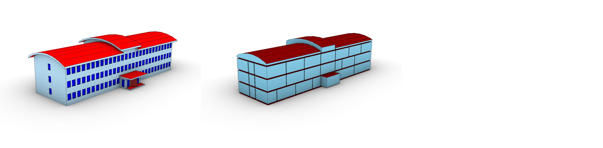
Figuur 27Visualisatie van LoD3.2 gebaseerd op het institute IFC model van IAI/KIT. Dak en voetafdruk (links) en de kamers (rechts) zijn los weergegeven
3D volumetrische representatie van het input BIM model.
De representatie bestaat uit:
Buitenschil
$n \geq 1$
Type: RoofSurface, GroundSurface, WallSurface, Window of Door
Volume dat is gemaakt door alle (deels) externe oppervlaktes te filteren met behulp van raycasting. Deze oppervlaktes worden met elkaar getrimd en de getrimde delen die aan de buitenkant van het gebouw liggen worden samengevoegd.
Binnenschil
Als IFC bestand IfcBuildingStorey objecten bevat $n \geq 1$ anders $n = 0$.
Type: CeilingSurface, FloorSurface of InteriorWallSurface
Volume dat per kamer is gemaakt door de IfcSpace vorm over te nemen.
5.4.2.2.10 LoD4.0
Figuur 28Visualisatie van LoD4.0 gebaseerd op het institute IFC model van IAI/KIT.
3D complex (geen schil) representatie van de objecten die de buitenkant van het input BIM model representeren.
De representatie bestaat uit:
Complex
Als objecten met IsExternal aanwezig zijn $n \geq 1$ anders $n = 0$
Type: ieder IfcClass type dat in het model zit met voorafgaand een "+". Zoals bijvoorbeeld IfcWall -> +IfcWall
Groep van volumes dat is verzameld door de ruimte scheidende IFC objecten met het attribuut IsExternal dat de waarde True heeft in het model 1:1 over te zetten.
5.4.2.2.11 LoD4.1
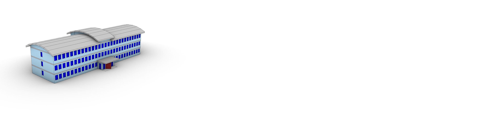
Figuur 29Visualisatie van LoD4.1 gebaseerd op het institute IFC model van IAI/KIT.
3D complex (geen schil) representatie van de ruimte scheidende objecten van het input BIM model.
De representatie bestaat uit:
Complex
$n \geq 1$
Type: ieder IfcClass type dat in het model zit met voorafgaand een "+". Zoals bijvoorbeeld IfcWall -> +IfcWall
Groep van volumes dat is verzameld door de IFC objecten die zijn gekozen als ruimte scheidende objecten 1:1 over te zetten.
5.4.2.2.12 LoD4.2
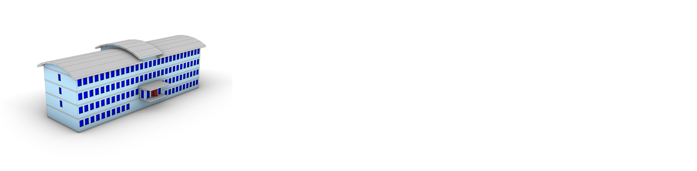
Figuur 30Visualisatie van LoD4.2 gebaseerd op het institute IFC model van IAI/KIT.
3D complex (geen schil) representatie van van het input BIM model.
De representatie bestaat uit:
Complex
$n \geq 1$
Type: ieder IfcClass type dat in het model zit met voorafgaand een "+". Zoals bijvoorbeeld IfcWall -> +IfcWall
Groep van volumes dat is verzameld door de IFC objecten 1:1 over te zetten. Deze abstractie gebruikt geen versimpelde representatie van de ramen en deuren zoals de rest van de abstractie wel doet.
5.4.2.2.13 LoD5.0/LoDv
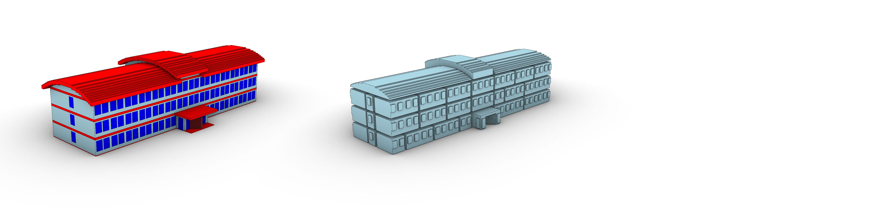
Figuur 31Visualisatie van LoD4.2 gebaseerd op het institute IFC model van IAI/KIT.
3D voxelisatie representatie van het model.
De representatie bestaat uit:
Buitenschil
$n \geq 1$
Type: RoofSurface, GroundSurface, WallSurface, Window of Door
Volume dat is gemaakt door alle externe oppervlaktes van de voxelisatie te isoleren. Op basis van van de soort IFC objecten die de voxels snijden kunnen deze oppervlaktes een type gegeven worden. oppervlaktes met hetzelfde type worden samengevoegd.
Binnenschil
$n \geq 1$.
Type: geen types geimplementeerd
Volume dat per kamer is door alle interne oppervlaktes van de voxelisatie te isoleren. Dit is niet gebaseerd op de IfcSpace objecten maar de ruimte scheidende objecten. De naam en attributen van de kamer kan wel worden gebaseerd op de IfcSpace objecten.
5.4.3 IFC2GeoJSON
6. Meer inhoud
6.1 Definities
Definitie: Een definitie is een beschrijving van een woord. Een ander woord voor definitie is betekenis of beschrijving.
6.2 Afbeeldingen
Afbeeldingen krijgen een nummer en vermelding in de figurenlijst 8. Lijst met figuren.
In het document, zoals [MIM12]. Deze zijn te vinden in js/config.js.
Referentie uit organisatie lijst [SemVer] of de locale lijst [MIM12]. Lijst staat in organisation-config.js. Alleen referenties die in de tekst voorkomen worden getoond.
We gebruiken een definitie om een woord te omschrijven.
6.4 Optioneel
De onderstaande secties (Conformiteit e.d.) zijn optioneel, zie index.html:
<body><sectionid="abstract"data-include-format="markdown"data-include="abstract.md"></section><sectionid="sotd"></section><!-- Wordt automatisch gevuld --><sectiondata-include-format="markdown"class="informative"data-include="ch01.md"></section><sectiondata-include-format="markdown"data-include="ch02.md"></section><!-- Hieronder optionele secties. Worden automatisch gevuld --><sectionid='conformance'></section><sectionid='tof'></section><sectionid="index"></section></body>
6.5 Voorbeelden
Noot: index
Dit hoofdstuk is toegevoegd met class="informative" in config.js.
Hier staat een tabel. Als de juiste style gekozen is ziet deze er goed uit.
Sleutel
Waarde
key
Deze waarde bevat een lange tekst zodat te zien is of de kolombreedte dynamisch wordt bepaald
6.6 Definities
Definitie: Een definitie is een beschrijving van een woord. Een ander woord voor definitie is betekenis of beschrijving.
6.6.1 Afbeeldingen
Afbeeldingen krijgen een nummer en vermelding in de figurenlijst 8. Lijst met figuren.
In het document, zoals [MIM12]. Deze zijn te vinden in js/config.js.
Referentie uit organisatie lijst [SemVer] of de locale lijst [MIM12]. Lijst staat in organisation-config.js. Alleen referenties die in de tekst voorkomen worden getoond.
We gebruiken een definitie om een woord te omschrijven.
6.6.3 Optioneel
De onderstaande secties (Conformiteit e.d.) zijn optioneel, zie index.html:
<body><sectionid="abstract"data-include-format="markdown"data-include="abstract.md"></section><sectionid="sotd"></section><!-- Wordt automatisch gevuld --><sectiondata-include-format="markdown"class="informative"data-include="ch01.md"></section><sectiondata-include-format="markdown"data-include="ch02.md"></section><!-- Hieronder optionele secties. Worden automatisch gevuld --><sectionid='conformance'></section><sectionid='tof'></section><sectionid="index"></section></body>
7. Conformiteit
Naast onderdelen die als niet normatief gemarkeerd zijn, zijn ook alle diagrammen, voorbeelden, en noten in dit document niet normatief. Verder is alles in dit document normatief.


 Detail
Detail
 Dimensie
Dimensie
 Locatie
Locatie
 Voorkomen
Voorkomen
 Parametrische Functionaliteit
Parametrische Functionaliteit